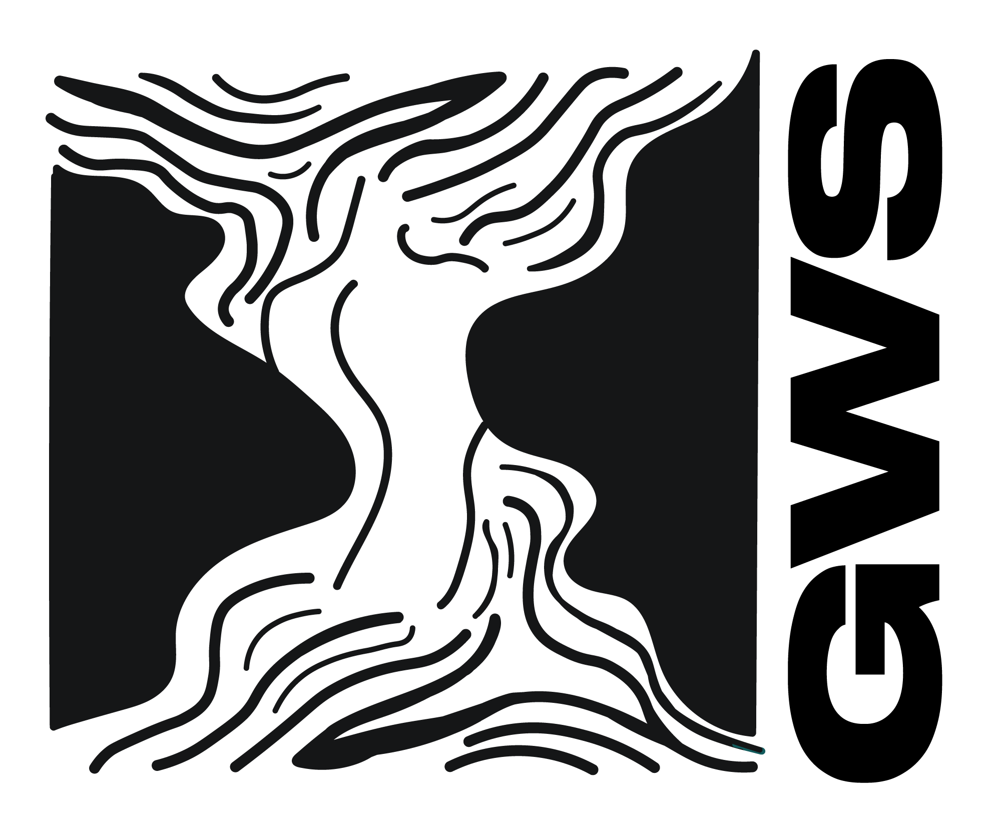

GWS–01
- Format
- Logo design
- Date
- Fall 2026
- Role
- Concept, drawing, and final files
- Tools
- Adobe Illustrator
GWS Program Logo

A negative-space mark built to be read more than one way. I drew a river running between two land masses. Other people have seen a tree, a flame, or simply flow, and every reading is right.
That openness is the point. GWS is interdisciplinary and fluid, and it never looks the same twice. The mark comes in three lockups, so it works as a corner badge on a slide, a header on a card, or the full program name in print.